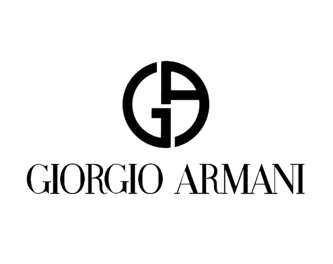

홈 > 브랜드 매거진 > 조르지오 아르마니
조르지오 아르마니 GIORGIO ARMANI
조르지오 아르마니(Giorgio Armani)는 1975년 밀라노에서 설립된 이탈리아 럭셔리 패션 하우스이다.
산업 분야 패션·럭셔리 · 공개 등급 편집 검수 · 브랜드 평가 4.7 ★


한눈에 보는 브랜드
조르지오 아르마니(Giorgio Armani)는 1975년 7월 디자이너 조르지오 아르마니와 동업자 세르조 갈레오티가 밀라노에 설립한 이탈리아 럭셔리 패션 하우스다. 미화 일만 달러 종잣돈으로 출발해 그해 10월 첫 남성 기성복 컬렉션을 선보였고, 어깨와 안감의 뻣뻣함을 덜어낸 '해체된 재킷'과 부드러운 파워수트로 현대 남성복의 문법을 다시 썼다.
정장과 기성복에서 출발해 가죽제품, 신발, 액세서리, 뷰티, 홈, 호텔까지 아우르는 종합 브랜드로 성장했으며, 절제되고 시대를 타지 않는 미니멀 미학이 정체성의 핵심이다.
브랜드 관점
럭셔리 경쟁에서 아르마니의 차별점은 로고를 앞세우는 과시형 대신 '조용한 럭셔리'를 일찍부터 체화한 점이다. 어깨선을 푼 해체주의 재킷과 뉴트럴 톤의 미니멀리즘으로 시간이 지나도 입을 수 있는 옷이라는 신뢰를 쌓았고, 이는 LVMH·케링 산하 마케팅형 브랜드와 결을 달리한다.
또 하나는 다층 브랜드 전략이다. 최상위 조르지오 아르마니, 1981년 출범한 대중 지향 엠포리오 아르마니, 2004년 만든 스포츠 라인 EA7, 도시형 영 캐주얼 아르마니 익스체인지로 가격대와 연령을 촘촘히 나눠 한 우산 아래 폭넓은 고객을 흡수한다.
핵심 변수는 승계다. 창업자가 2025년 9월 91세로 별세하면서, 누이 로사나·조카들·오랜 동료 판탈레오 델오르코와 재단으로 지분이 분산됐고 유언은 일정 지분 매각이나 상장을 지시해 독립 경영의 향방이 시험대에 올랐다.
한국에서는 백화점 중심 유통이 재편되며 일부 점포가 정리되는 등 효율화 흐름이 이어지고 있다.
시작과 성장
창업의 결정적 인물은 세르조 갈레오티다. 1960년대 후반 두 사람이 만난 뒤 1973년 갈레오티가 밀라노에 디자인 사무소를 열도록 설득했고, 1975년 7월 24일 함께 회사를 세웠다.
아르마니는 사업가로 나설 용기를 준 사람으로 그를 꼽았다. 도약의 전환점은 영화였다.
1980년 리처드 기어 주연의 '아메리칸 지골로' 의상을 아르마니가 전담하면서 부드러운 정장이 스크린을 통해 각인됐고 브랜드는 단숨에 세계적 이름이 됐다. 1981년에는 보다 젊은 20~30대를 겨냥한 엠포리오 아르마니를 출범시켜 디퓨전(보급형) 라인 확장을 본격화했고, 1988년 로레알과 손잡아 향수·화장품 라이선스를, 이후 룩소티카와 아이웨어 라이선스를 맺으며 카테고리를 넓혔다.
1985년 갈레오티가 세상을 떠난 뒤에도 아르마니는 단독 경영으로 제국을 키워 EA7, 아르마니 익스체인지 등 라인을 더했다.
브랜드 아이덴티티
브랜드 정체성은 '절제·현대성·우아함·과시 없는 디테일'이라는 창업자의 신념에 뿌리를 둔다. 상징은 오른쪽을 향한 독수리 로고로, 힘과 자유, 고귀함을 뜻하며 엠포리오 라인에서 가로 줄무늬와 함께 쓰인다.
메인 조르지오 아르마니 로고는 'G'와 'A' 이니셜을 이름 위에 절제되게 얹은 형태다. 색채는 그레이지·네이비 등 뉴트럴 톤 중심이며, 톤은 차분하고 군더더기 없는 자신감을 말한다.
타깃은 격식과 품위를 중시하는 성숙한 럭셔리 소비자에서, 라인별로 젊은 도시 고객까지 폭넓게 포괄한다. 보이스는 조용하고 시대를 초월한 우아함을 일관되게 전한다.
제품과 서비스
제품은 맞춤·기성 정장과 파워수트를 정점으로 가죽제품, 신발, 액세서리, 홈, 그리고 로레알이 운영하는 향수·메이크업·스킨케어 뷰티까지 아우른다. 1982년 여성용, 1984년 남성용 향수를 출시했다.
가격대는 조르지오 아르마니 맞춤 정장 수천 파운드대 최상위부터 엠포리오의 중상위, 아르마니 익스체인지의 대중가까지 층을 이룬다. 유통은 전 세계 육백여 직영·플래그십 매장과 공식 온라인몰, 백화점이 중심이다.
현재 상태
본사는 밀라노에 있다. 2024 회계연도 순매출은 약 23억 유로로 환율 기준 6% 감소했고 상각전영업이익은 24% 줄었으나, 약 3억 3천만 유로 규모의 기록적 투자를 단행했다.
소유·지배 구조는 2025년 9월 창업자 별세 후 누이·조카, 오랜 동료 델오르코와 자선 재단 등 여러 주체로 분산됐으며, 유언은 일정 지분을 LVMH·로레알·에실로룩소티카 등에 우선 매각하거나 상장하라고 지시했다. 구체적 지분율 등 세부 거래 내용은 미공개다.
타임라인
BI/CI 변천사
자주 묻는 질문
조르지오 아르마니는 언제 설립되었나요?
조르지오 아르마니는 1975년 설립되었습니다.
조르지오 아르마니의 브랜드 아이덴티티는 무엇인가요?
브랜드 정체성은 '절제·현대성·우아함·과시 없는 디테일'이라는 창업자의 신념에 뿌리를 둔다.
조르지오 아르마니의 대표 제품은 무엇인가요?
제품은 맞춤·기성 정장과 파워수트를 정점으로 가죽제품, 신발, 액세서리, 홈, 그리고 로레알이 운영하는 향수·메이크업·스킨케어 뷰티까지 아우른다.
조르지오 아르마니의 본사는 어디에 있나요?
본사는 밀라노에 있다.
조르지오 아르마니의 공식 웹사이트는 어디인가요?
조르지오 아르마니의 공식 웹사이트는 https://www.armani.com/ 입니다.
함께 읽을 브랜드
 패션·럭셔리 · 자료 기반돌체앤가바나
패션·럭셔리 · 자료 기반돌체앤가바나돌체앤가바나는 도메니코 돌체와 스테파노 가바나가 1985년 이탈리아 밀라노에서 선보인 럭셔리 패션 하우스다. 시칠리아의 바로크 감성과 지중해의 관능을 의상으로 옮겨...
 패션·럭셔리 · 자료 기반보테가 베네타
패션·럭셔리 · 자료 기반보테가 베네타보테가 베네타(Bottega Veneta)는 1966년 이탈리아 비첸차에서 설립된 럭셔리 가죽제품 브랜드이다.
 패션·럭셔리 · 편집 검수생 로랑
패션·럭셔리 · 편집 검수생 로랑생 로랑(Yves Saint Laurent)은 1961년 파리에서 설립된 프랑스 럭셔리 패션 하우스이다.
 패션·럭셔리 · 자료 기반펜디
패션·럭셔리 · 자료 기반펜디펜디(Fendi)는 1925년 로마에서 설립된 이탈리아 럭셔리 모피·가죽제품 하우스이다.
 패션·럭셔리 · 자료 기반에르메네질도 제냐
패션·럭셔리 · 자료 기반에르메네질도 제냐제냐(Zegna)는 1910년 이탈리아에서 모직 원단 공장으로 출발한 럭셔리 남성복 브랜드이다.
 패션·럭셔리 · 자료 기반커버낫
패션·럭셔리 · 자료 기반커버낫커버낫은 비케이브가 전개하는 한국의 아메리칸 캐주얼·스트리트웨어 브랜드다. 빈티지 의류를 현대적 감각으로 재해석한 데일리웨어를 중심으로, 간결하면서 강한 로고 운용과...
 패션·럭셔리 · 매거진 완성스와치
패션·럭셔리 · 매거진 완성스와치스와치는 시계를 고가의 정밀기기에서 매일 바꿔 착용할 수 있는 패션 언어로 전환했다. 시간을 알려주는 기능보다 색, 그래픽, 컬렉션, 가벼운 가격대가 브랜드 경험의...
 패션·럭셔리 · 편집 검수디젤
패션·럭셔리 · 편집 검수디젤디젤(Diesel)은 1978년 렌조 로소가 이탈리아 브레간체에서 설립한 데님 중심의 컨템포러리 패션 브랜드다. 도발적이고 실험적인 디자인으로 데님 헤리티지를 재해석...